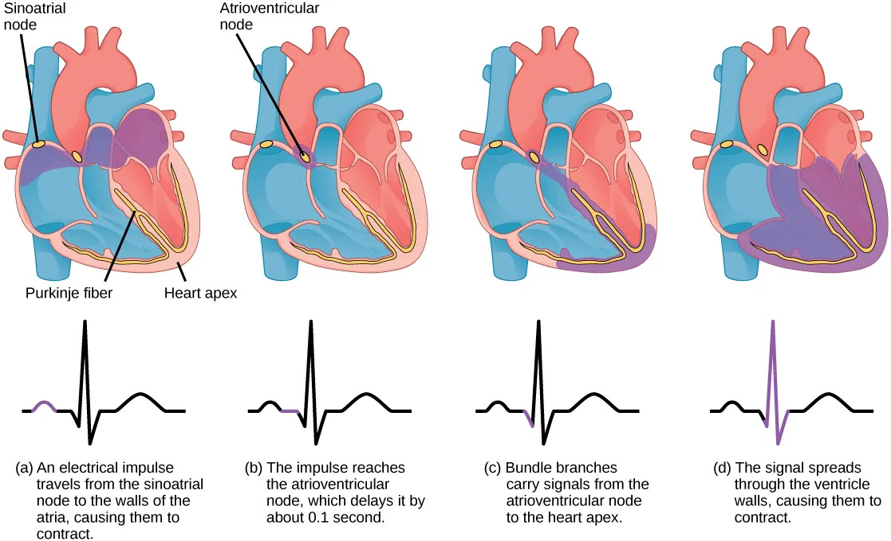
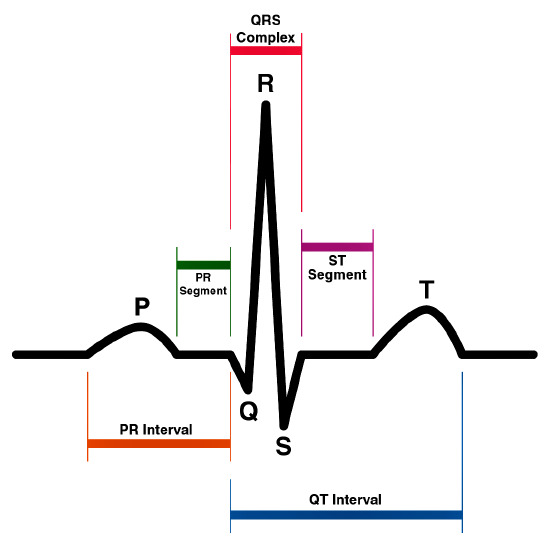
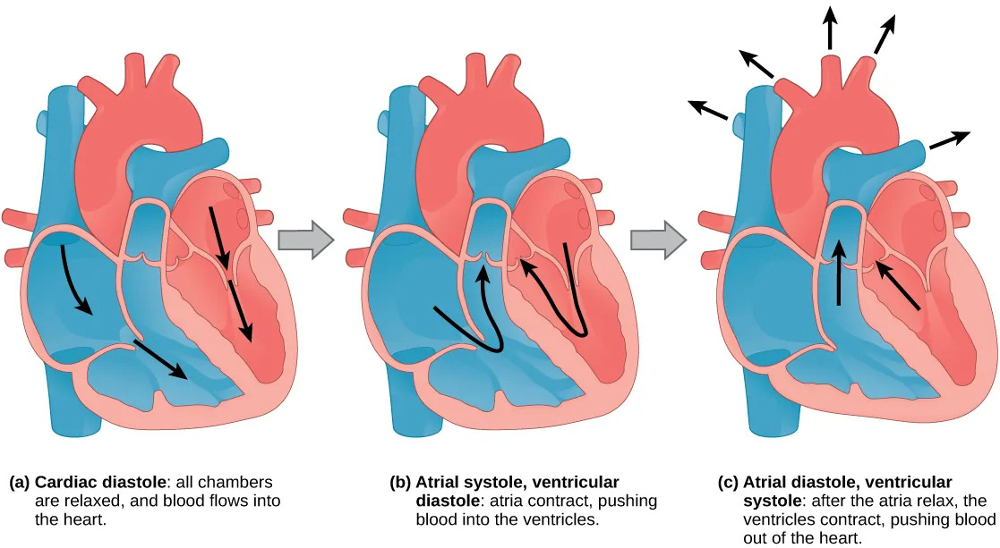

心脏的自动节律性（自律性）起源于起搏点。两栖类起搏点是静脉窦，哺乳类静脉窦退化，留下窦房结成为起搏点。
心的传导系统：
- 窦房结P细胞：正常起搏点，自律频率最高（人约100次/min，受迷走神经影响实际约75次/min）→ 窦性心律
- 房室结P细胞：潜在起搏点（人约50次/min），正常作用是将来自窦房结的冲动延搁约0.07秒再下传至心室肌，使心房肌和心室肌依次分开收缩 → 交界性心律
- 浦肯野纤维：组成房室束及其分支，传导速度比房室细胞快10倍以上 → 室性心律
心肌收缩三大特性：
- ① 同步收缩（功能合胞体，全或无）
- ② 不发生强直收缩（不应期长）
- ③ 心肌收缩依赖外源Ca²⁺的内流
心电图（ECG）：
- P波：心房去极化（0.08～0.11s）
- QRS波群：心室去极化（0.06～0.10s）
- T波：心室复极化（0.05～0.25s）
- P-R间期：房室传导时间（0.12～0.2s）
- 没有心房复极化波 → 被QRS波掩蔽



心动周期（以0.8s为例）：心房收缩0.1s/舒张0.7s，心室收缩0.3s/舒张0.5s。无论是心房还是心室，舒张期都比收缩期更长——保证血液有足够时间回流，心肌有足够时间休息。

心输出量：每分心输出量 = 每搏心输出量 × 心率。静息时约5L/min，剧烈运动可达30L/min。心指数 = 每分心输出量/体表面积（3.0～3.5 L/(min·m²)）。射血分数 = 每搏输出量/心室舒张末期容积量（正常50%～70%）。
ECG记忆口诀：
P波心房去极化
QRS心室去极化
T波心室复极化
心房复极被QRS掩蔽
心肌收缩三大特性：同步、不强直、依赖外钙
P波心房去极化
QRS心室去极化
T波心室复极化
心房复极被QRS掩蔽
心肌收缩三大特性：同步、不强直、依赖外钙